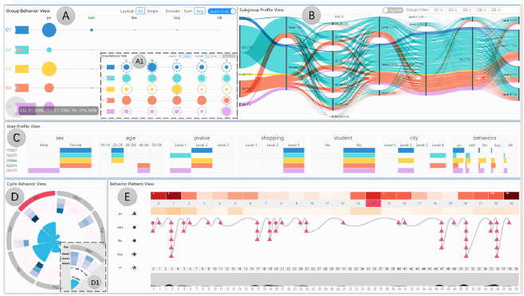

Xiaolin Wen 温啸林 (Shawn)
I am now a PhD student at Nanyang Technological University (NTU) under the guidance of Prof. Yong Wang. In 2023, I got my master's degree in computer science at Vision Computing Lab, College of Computer Sicence, Sichuan University, and my supervisor was Prof. Min Zhu. In 2020, I got my dual bachelor's degree in computer science and technology & financial engineering at Sichuan University.
My research interests include Human-Computer Interaction and Data Visualization.
Now, I am working on Visualization for Web3 Fraud Detection and Vis+LLM.
Contact
xiaolin004@e.ntu.edu.sg+86 15520769887 / +65 98927790
News
- 2025.01: üéì Become a PhD student at Nanyang Technological University, Singapore!
- 2024.12: üìú Our paper PonziLens+ is accepted by TVCG!
- 2024.10: üé§ Give an oral presentation for the published paper DiffSeer in IEEE VIS 2024!
- 2024.07: Become a Research Engineer at Nanyang Technological University, Singapore!
- 2024.01: üé§ Give a talk named "Visualization for Web3 Fraud Detection" at Sichuan University!
- 2023.12: üìú Our paper VIOLET is accepted by 2024 IEEE PacificVis TVCG track!
- 2023.09: üé§ Attend penal discussion as a Guest Speaker in Web3 Security Forum at SMU, Singapore!
- 2023.09: Become a Research Engineer at Singapore Management University!
- 2023.06: üéì Graduate from Sichuan University and get my Master's degree in Computer Science and Technology!
- 2023.04: üé§ Give an oral presentation for the published paper NFTDisk in CHI 2023, Germany!
- 2023.06: Win the awards of üéñÔ∏èResearch Star and üéñÔ∏èExcellent Graduation Thesis at Sichuan University!
- 2023.02: üìú Our paper PonziLens is accepted by CHI 2023 Late-Breaking Work!
- 2023.02: üìú Our paper DiffSeer is accepted by IEEE Computer Graphics & Applications!
- 2023.01: üìú Our paper NFTDisk is accepted by CHI 2023!
- 2022.02: Become a Research Assistant at Singapore Management University!
- 2021.12: Win the üéñÔ∏èFirst Price of Tecent Scholarship at Sichuan University!
- 2021.10: Become a Visting Student at Southern University of Science and Technology!
- 2020.09: Join Visual Computing Lab at Sichuan University and start my Master's degree pursuit!
- 2020.06: üéì Graduate from Sichuan University and get my dual Bachelor's degree in Computer Science and Financial Engineering!
Publications
(You can get the newest publication by Google Scholar !)
| 2024 |
PonziLens+: Visualizing Bytecode Actions for Smart Ponzi Scheme Identification Xiaolin Wen, Tai D. Nguyen, Shaolun Ruan, Qiaomu Shen, Jun Sun, Feida Zhu, and Yong Wang. IEEE Transactions on Visualization and Computer Graphics. 2024. To Appear. (paper link) (download) |
||
| 2024 |

|
VIOLET: Visual Analytics for Explainable Quantum Neural Networks Shaolun Ruan, Zhiding Liang, Qiang Guan, Paul Griffin, Xiaolin Wen, Yanna Lin and Yong Wang. IEEE Transactions on Visualization and Computer Graphics (Proceedings of PacificVis 24 TVCG track). 2024. (paper link) (download) |
|
| 2023 |
NFTDisk: Visual Detection of Wash Trading in NFT Markets Xiaolin Wen, Yong Wang, Xuanwu Yue, Feida Zhu, Min Zhu. ACM CHI Conference on Human Factors in Computing Systems, 2023. (paper link) (download) |
||
| 2023 |

|
Code Will Tell: Visual Identification of Ponzi Schemes on Ethereum Xiaolin Wen, Kim Siang Yeo, Yong Wang, Ling Cheng, Feida Zhu, Min Zhu. ACM CHI Conference on Human Factors in Computing Systems, Extended Abstract, 2023. (paper link) (download) (poster) |
|
| 2023 |

|
DiffSeer: Difference-based Dynamic Weighted Graph Visualization Xiaolin Wen, Yong Wang, Meixuan Wu, Fengjie Wang, Xuanwu Yue, Qiaomu Shen, Yuxin Ma, Min Zhu. IEEE Computer Graphics & Application, 2023. (paper link) (download) |
|
| 2023 |
WarehouseLens: Visualizing and Exploring Turnover Events of Digital Warehouse Fuqiu Chen, Jizhuo Li, Fengjie Wang, Shangsong Liu, Xiaolin Wen, Pengyuan Li, Min Zhu. Journal of Visualization, 2023. (paper link) (download) |
||
| 2022 |
Visual Analysis Method of Blockchain Community Evolution Based on DPoS Consensus Mechanism Xiaolin Wen, Changlin Li, Shangsong Liu, Xinyi Zhang, Min Zhu. Computer Science, 2022. (Chinese Journal) (download) |
||
| 2022 |

|
TriPlan: An Interactive Visual Analytics Approach for Better Tourism Route Planning Xinyi Zhang, Xiao Pang, Xiaolin Wen, Fengjie Wang, Changlin Li, Min Zhu. Journal of Visualization, 2022. (paper link) (download) |
|
| 2022 |

|
MDIVis: Visual Analytics of Multiple Destination Images on Tourism User Generated Content Changlin Li, Mengqi Cao, Xiaolin Wen, Haotian Zhu, Shangsong Liu, Min Zhu. Visual Informatics, 2022. (paper link) (download) |
|
| 2021 |  |
MulUBA: Multi-level Visual Analytics of User Behaviors for Improving Online Shopping Advertising Shangsong Liu, Di Peng, Haotian Zhu, Xiaolin Wen, Xinyi Zhang, Zhenghao Zhou, Min Zhu. Journal of Visualization, 2021. (paper link) (download) |
|
Education
| Jan. 2025 - present |
Doctor of Philosophy (PhD) student in College of Computing & Data Science
Nanyang Technological University, Singapore. |
|
| Sep. 2020 - Jun. 2023 |
Master's Degree in Computer Science and Technology
Sichuan University, China. |
|
| Sep. 2016 - Jun. 2020 |
Dual Bachelor's Degree in Computer Science and Technology & Financial Engineering Sichuan University, China. |
|
Patents
| 2020 |
An effective visualization method of EOS consensus mechanism based on workload Ranking difference
Min Zhu, Xiaolin Wen, Shangsong Liu, Xinyi Wang, Lin Yao. (Chinese Patent) |
|
| 2020 |
Interactive machine learning method based on visualization
Min Zhu, Xiaolin Wen, Shangsong Liu, Xiaoxiao Xiong. (Chinese Patent) |
|
Experiences
| 2024.07-2024.12 |
Research Engineer, Nanyang Technological University, Singapore.
|
|
| 2023.09-2024.07 |
Research Engineer, Singapore Management University.
|
|
| 2022.02-2022.09 |
Research Assistant, Singapore Management University.
|
|
| 2021.10-2021.12 |
Visiting Student, Southern University of Science and Technology.
|
|
Activities
- Oct. 2024. Presentation in IEEE VIS 2024, Online.
- Sep. 2023. Guest Speaker in Web3 Security Forum at SMU, Singapore.
- Apr. 2023. Presentation in CHI 2023, Hamburg, Germany.
- Jul. 2021. ChinaVis 2021 in Wuhan, China.
- Jul. 2021. PKU International Visualization Summer School 2021.
- Jun. 2021. ChinaVis Challenge 2021. (Team Leader)
- Jun. 2021. BAAI Conference 2021 in Beijing, China.
- Nov. 2020. ChinaVis 2020 in Xi'an, China.
- Jul. 2020. Visualization Summer School of Zhejiang University.
- May. 2020. ChinaVis Challenge 2020. (Team Leader)
- May. 2019. ChinaVis Challenge 2019.
Awards
- Jun. 2023. Research Star, College of Compueter Science, Sichuan University (5/319)
- Jun. 2023. Excellent Graduation Thesis, College of Compueter Science, Sichuan University (5/319)
- Dec. 2021. The First Price of Tencent Scholarship, Sichuan University. (3/319)
- Jun. 2021. The Award of Excellence, ChinaVis Challenge 2021. (27/77)
- May. 2020. The Award of Excellence, ChinaVis Challenge 2020. (32/96)